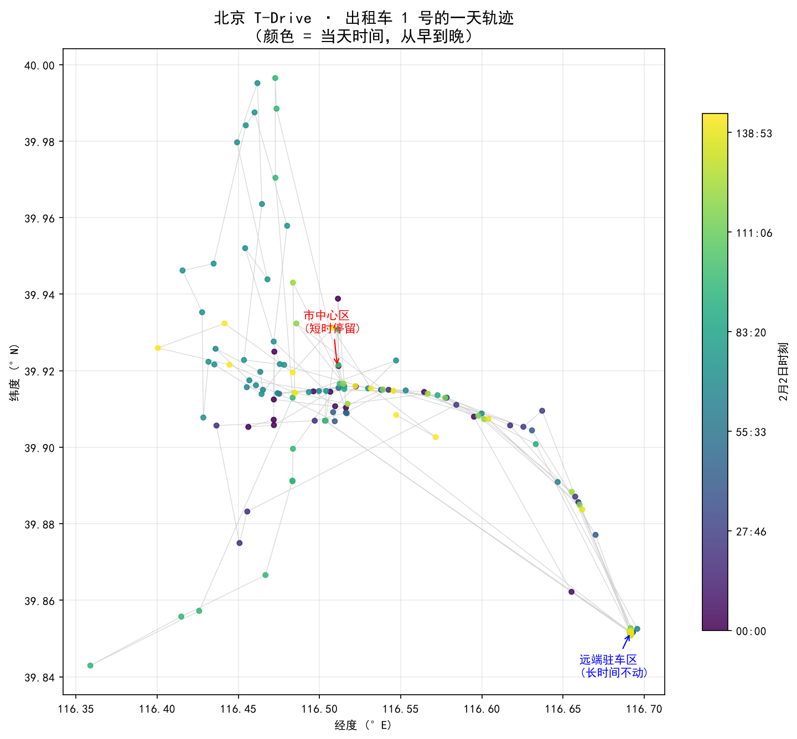
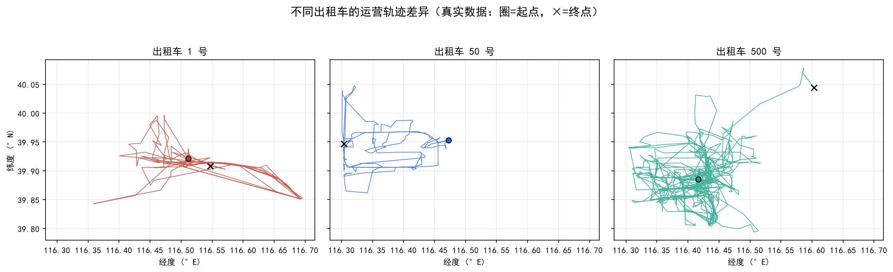
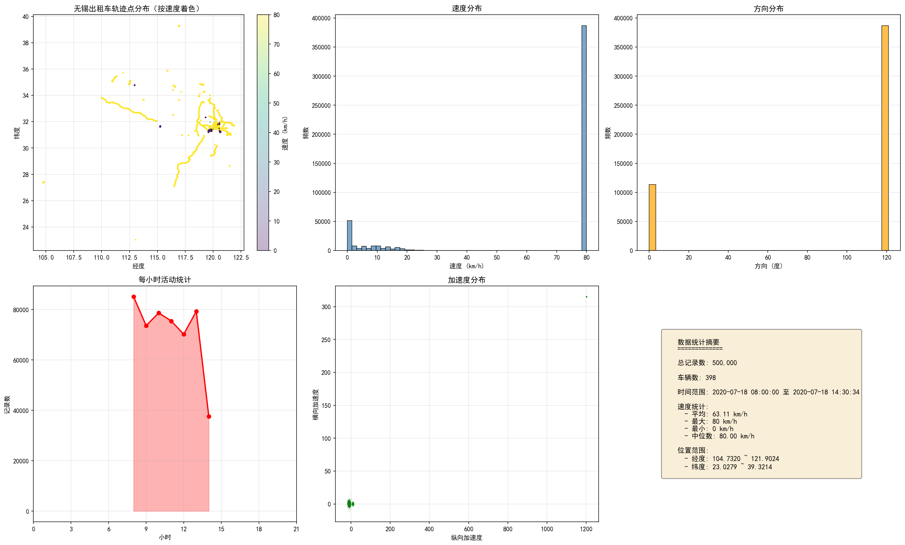
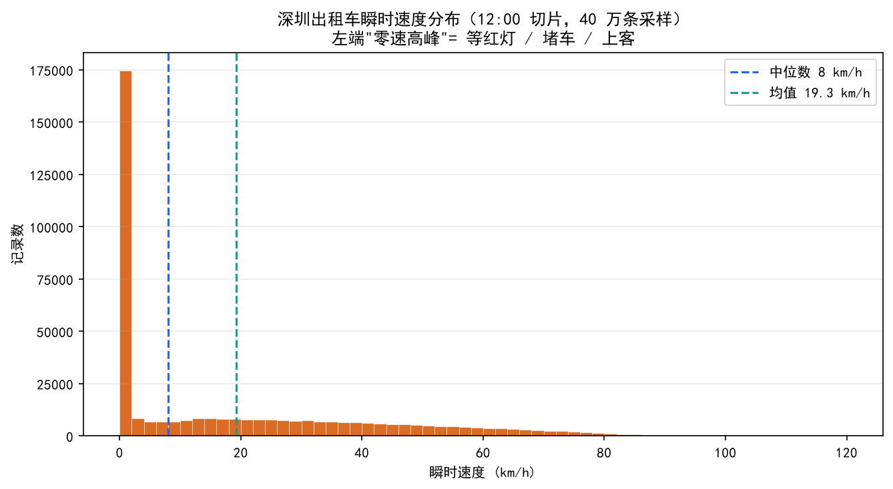

把点连成线，再从线里读故事
轨迹分析最基础也最重要的一步，是把一组按时间排序的 GPS 点，还原成"移动—驻停—再移动"的真实过程。 这一步做好了，后面 OD、热点、拥堵分析才有了地基。下面用三城的真实数据，看三种"读法"。
读法一：移动段 vs 驻停段
一辆出租车的一天，本质上是一段段"移动"和"驻停"的拼接。看北京 1 号车一整天的轨迹， 颜色从紫到黄代表从早到晚。下午的点在城区漂移（移动段），21:40 之后坐标几乎钉死在一处（驻停段）：

常用办法是"停留点检测（stay point detection）": 如果一个点的速度/位移在一段连续时间窗口内都小于阈值，就标记为停留。 阈值通常取：速度 < 1 km/h，半径 < 100 米，持续时间 > 5–10 分钟。切分后，每条轨迹变成一串"移动段—停留点"， 就能统计每辆车的工作时长、驻停次数、平均段长。
读法二：不同车的"轨迹性格"
把多辆车的一天轨迹并排看，能看出完全不同的"性格"：有的车只在市中心打转（短途高频），有的车直奔远郊再折返（长途少单）。 这种差异不是随机，而是运营策略不同：

读法三：空间分布——车都聚在哪？
单车看性格，千车叠加看城市结构。把无锡一个样本里的轨迹点全部铺到地图上，再加速度颜色， 就能看出城市主干道和"车爱走哪里"。注意右下角的统计摘要显示经纬度跨度极大——再次提醒我们这份数据的覆盖范围远超无锡：

- 散点图：把所有点叠加，直观看出路网骨架；
- 热力图 / hexbin：把空间网格化，颜色表示每格点的数量，适合找聚集区；
- 核密度估计（KDE）：更平滑的连续密度面，用于定位热点边界。
读法四：速度画像——城市的"脉搏"
速度是轨迹里最容易被低估的字段。深圳数据直接提供了瞬时速度，把全部速度画成直方图， 你会看到一个被压缩在 0 附近的巨大尖峰——那是红灯、堵车、等客时无数辆车共同写下的"城市节奏"。

| 速度区间 | 含义 | 可做的分析 |
|---|---|---|
| 0 km/h | 红灯、堵车、上客、驻车 | 拥堵热力图、上下客停留点 |
| 1–20 km/h | 慢行（拥堵、窄路、找车位） | 拥堵段识别、低效路网 |
| 20–60 km/h | 市区正常行驶 | 平均速度分区比较 |
| >80 km/h | 城市快速路 / 高速 | 干道使用率；也用于过滤异常值 |
轨迹分析的通用流程
- 清洗
去重、按边界裁剪、剔除时间异常与速度异常值。
- 排序与分段
按车辆+时间排序；用速度/位移阈值把轨迹切成移动段和停留段。
- 计算单段特征
段长、段时长、平均速度、起终点、方向变化。
- 聚合
按小时/按区域/按车辆类型汇总，得到时空分布与统计画像。
- 可视化验证
用地图、直方图、热力图反复核对，确保模式不是清洗 artifact。